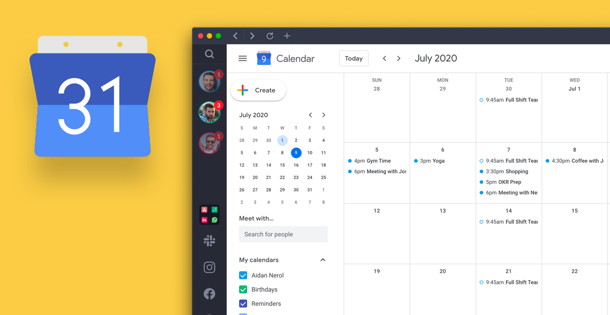

☩ The Internet and The Web
The Internet is a network of several computer which are interconnected with each other. It is the foundation of the digital era and allows people around the world to share
data in form of words, images and any digital file instantaneously. The Internet is a large network that connects together smaller networks all over the globe.
The Internet was launched in 1969 when the United States funded a project that developed a national computer network called
Advanced Research Project Agency Network (ARPANET).
The web, also knwon as World Wide Web (WWW), is a way of accessing any sort of information over the Internet. It was introduced
in 1991. The web provides an easy-to-use interface to Internet resources. It has become everyday tool for all of us to use. Prior to the web, the Internet was all text-no graphics,
animations, sounds or video. The web made it possible to include these elements. It provided a multimedia interface to resources available on the Internet. The web has matured through
four generations, commonly called Web 1.0, 2.0, 3.0 and 4.0.
Web 1.0 focused on linking existing information. Google Search and other search engines made it possible for users to search the web to locate web pages of interest. However, to
create a web page required a background in computers and programming. Many users could view web content, but few users could create web content.
Web 2.0 evolved to support more dynamic content creation and social interaction. Facebook and other social media sites made an emergence so that non-technical people could be
seen and heard on the web. These sites allow almost anyone to post videos, images and text about thier lives. However, the massive amount of social media posts made it difficult to
find truly valuable information. Many users could view create web content, but few could readily locate valuable, timely information on the web.
Web 3.0 is the current generations web. It focuses on applications that automatically prepare personalised content for users. For example, Google now uses data from the web (e.g.,
and individual's calendar of planned activities, weather reports and traffic reports); searches for interrelationship amoung the data (e.g., the effect of weather and traffic on an individual's
daily commute to work) and automatically presents relevant information to the user (e.g., sends an early morning message to the individual's smartphones regarding expected bad weather and/or
traffic delays), see Figure 2-1.
Web 4.0 is still a premature idea and in its experimental stage. It is also known as WebOS or Symbiotic web and is identified for interaction between humans and machines.
It is not wrong to call Web 4.0 as the read-arite-execution-concurrency web. The advantages of Web 4.0 could be:
◉ Building mind-controlled interface
◉ Ability of machine to read, react and decide what to execute
◉ Faster website loading with superior quality
◉ Building more commanding interface
◉ Act as a middleware between human brain and the machine

Figure 2-1 Google Calendar
It is easy to get the Internet and the web confused, but they are not the same thing. The Internet is the physical network. It is made up of wires, cables,
satellites and rules for exchanging information between computers connected to the network. Being connected to this network is often described as being
online. The Internet connects millions
of computers and resources thorughout the world. The web is multimedia interface to the resources available on the Internet and the web. The most common uses of the Internet and the web are listed
as follows:
Communicating is by far the most popular Internet activity. You can exhange e-mail, photos and videos with your family and friends almost anywhere in the world. You can locate
old friends and make new friends. You can join and listen to discussions and debates on a wide variety of special interest topics. Some examples are Facebook, Twitter, Instagram and
LinkedIn.
Shopping is one of the fastest-growing Internet applications. You can window shop, look for latest fashions, search for bargains and make purchases. Some examples such as Myntra, Amazon,
Flipkart and Paytm are India's largest e-commerce platforms where user can enjoy shopping in a simple way.
Searching for information has never been more convenient. You can access some of the world's largest libraries directly from your computer. You can find the latest local, national
and international news quickly at a click. For example, Yahoo search and Google search are the fastest web search engines that searches for and indentify terms in database.
Education or e-learning is another rapidly emerging web application. You can take classes on almost any subject using the web. There are several short-term and long-term courses
available for high school, college and gradute school students. Some are paid while some are available freely. Some examples are Simplilearn, Khanacademy, Lynda, Udemy, e-learningforkids.org., and
W3schools.com (free e-Learning website for web designing).
Entertainment options on the web are nearly endless. You can find the latest movies on Netflix and Amazon Prime, listen to latest music on JioSaavn or Wynk or Gaana Music App,
read the week's bestselling author on CoolReader or read and listen to your favourite books on Google Play Books.
The first step to using the Internet and the web is to get connected, or to gain access to the Internet.
Suppose you have made an online purchase from Amazon.com. Once you receive the item you find it not up to your expectations. Discuss the return policy and steps involved from return,
pickup and refund.